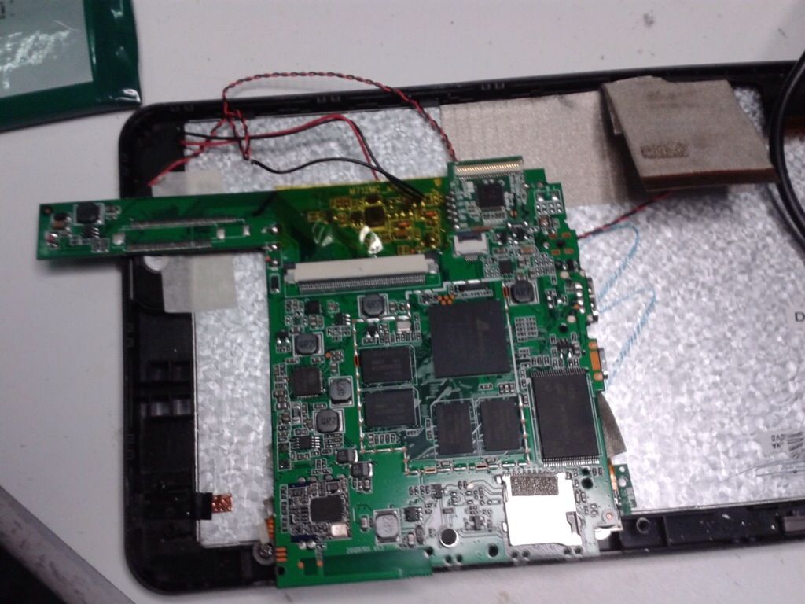
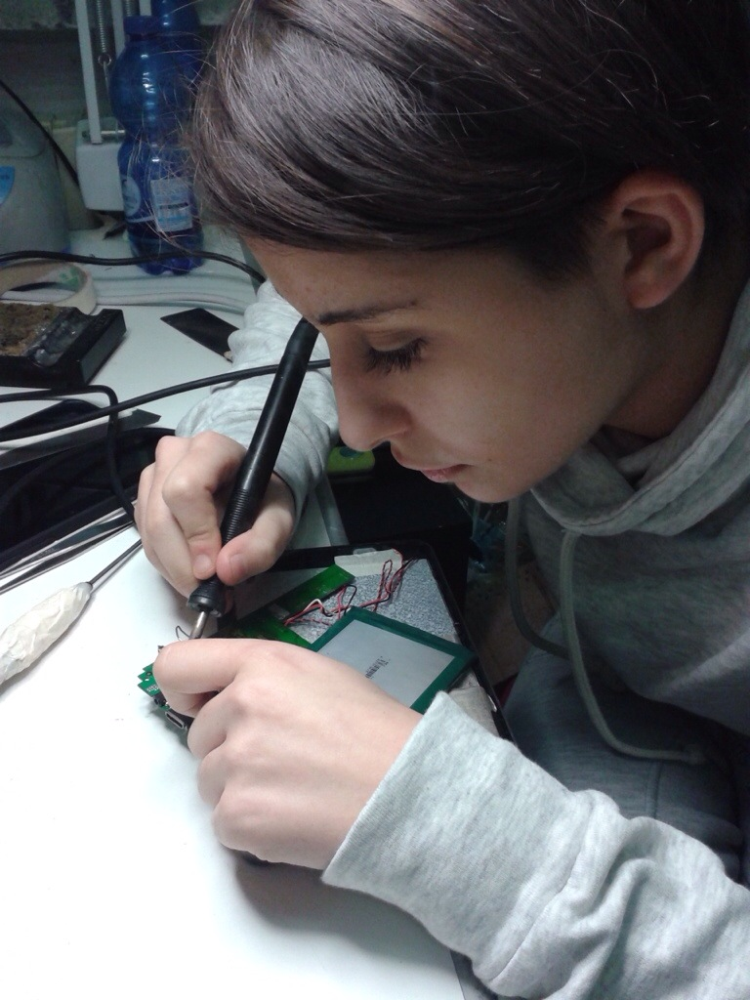

Durante i due mesi di stage ho fatto diversi lavori tipo riparazione tablet, flashare e testarli per vedere se
effettivamente funzionavano o per renderci conto di che guasto aveva.
ho fatto solo riparazione tablet del tipo:
- DJ JACK
- LCD
- DISPLAY
- CORTI
- BATTERIA
- DONATORI
La cosa che mi e' piaciuto fare e' aggiustare LCD.
Si prende un tablet che ha effettivamente LCD che non funziona e si prende un donatore (un tablet che dona i propri
componenti per aggiustare altri tablet) oppure un corto (tablet che e' andato in cortocircuito e quindi non puo' essere
utilizzato). Prima di tutto si prende un katter e si apre il tablet o LCD oppure DONATORE, bisogna togliere tutte le viti
perchè si deve togliere la piastra e poi dissaldare la batteria.
La stessa cosa la facciamo con il tablet donatore ma la scheda di essa va buttata perche' si puo' utilizzare,
le due batterie che rimangono bisogna testarle per vedere quali delle due ha più voltaggio o se funzionano;
se tutti e due funzionano una la mettiamo da parte con il nome del modello e il voltaggio e una la saldiamo
sopra il tablet "buono", se invece non funzionano tutti e due si taglia il filo rosso e si gettano e ovviamente
bisogna saldarne un'altra che funziona.
In fine bisogna rimettere le viti, chiuderlo e accenderlo per controllare se il guasto e' stato riparato nel modo corretto.

